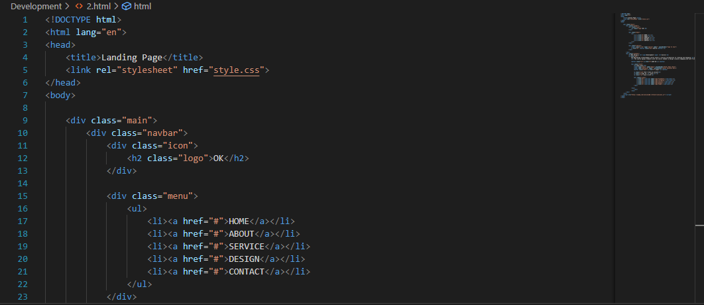
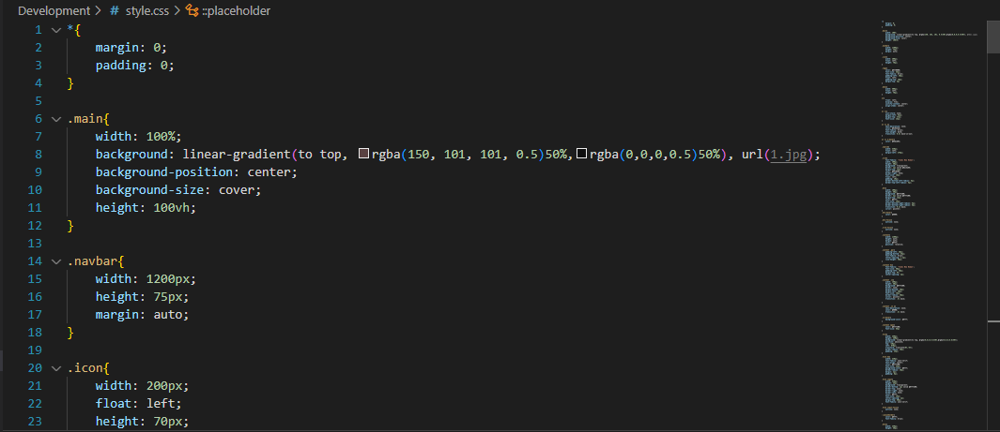
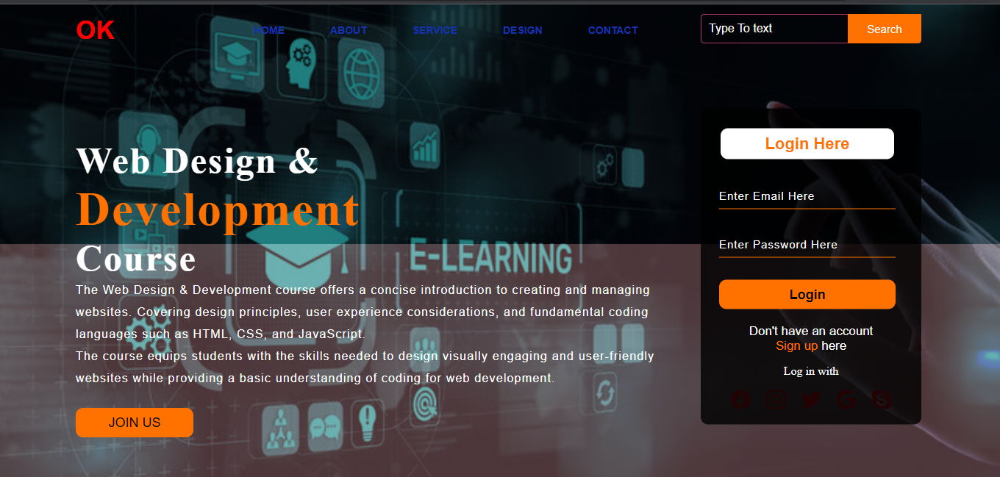

Project 2: Creating a Landing Page with HTML and CSS



In Project 2, I dived into the realm of web development by designing and building an appealing landing page using HTML and CSS. This project allowed me to apply fundamental concepts in web design, such as layout structuring, styling, and incorporating interactive elements. By carefully crafting each section of the landing page and selecting a harmonious color scheme, I created a visually appealing and engaging user experience. Throughout this endeavor, I honed my skills in coding, design aesthetics, and the seamless integration of creative elements to captivate users' attention.